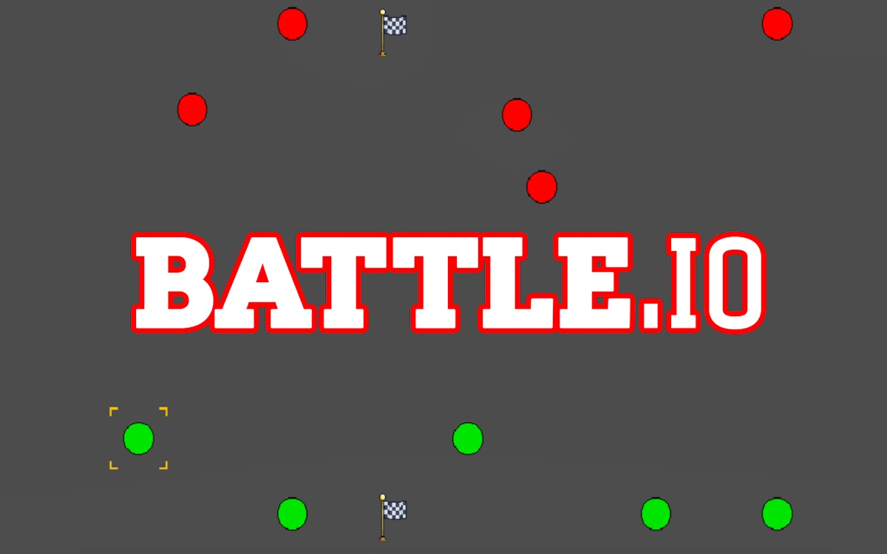
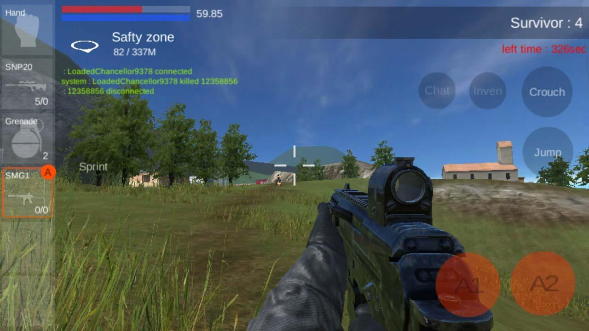

Introduction
Battle.io is a thrilling, fast-paced multiplayer battle arena that drops you into a chaotic top-down battlefield where only the last player standing survives. What makes it unique is its seamless blend of intense gunplay, tactical positioning, and the ability to hijack and drive various combat vehicles to dominate the arena. Players love it for its quick matchmaking, responsive controls, and the constant adrenaline rush of scavenging for upgraded weapons and power-ups while dodging enemy fire. Whether you are sniping from behind cover or ramming opponents in a tank, the dynamic environment ensures no two matches feel the same. It perfectly balances accessibility for newcomers with a high skill ceiling for veteran arena shooters looking to prove their dominance.
Getting Started

To start playing Battle.io, simply visit the official website and click play to instantly drop into a matchmaking lobby. You will spawn on the map with a basic pistol. Your primary controls involve using the WASD or Arrow Keys for movement, the Mouse to aim, and the Left Mouse Button to shoot. Pressing the Spacebar executes a quick dash, which is crucial for evading bullets. Your immediate goal is to survive and scavenge. Move toward glowing weapon crates to upgrade your firepower, ranging from shotguns to rocket launchers. Keep an eye out for health packs and shield power-ups to sustain yourself in fights. As the match progresses, look for parked vehicles like buggies or tanks. Simply walk up to them and press the interact key to mount. Vehicles provide massive health pools and heavy weaponry, completely changing your combat approach. Mastering the transition between on-foot agility and vehicle-based brute force is your first step to securing that victory.
Basic Tips
First, always stay on the move. Standing still in Battle.io makes you an easy target for snipers and splash damage. Use your Spacebar dash to break enemy aim and dodge incoming projectiles. Second, utilize the map's obstacles effectively. Never cross open fields without cover; hug walls, crates, and buildings to block line-of-sight attacks while you reload or heal. Third, prioritize weapon tiers. A common beginner mistake is sticking to a weak pistol when a shotgun or assault rifle is nearby. Actively hunt for weapon drops, but check your corners before grabbing them to avoid walking into an ambush. Fourth, manage your dash cooldown. Do not waste your dash just to move faster; save it strictly for escaping fatal damage or closing the gap for a surprise melee or point-blank shotgun blast. Finally, if your health is low, retreat. There is no shame in hiding behind a rock to heal and reassess the battlefield rather than dying in a hopeless fight.
Advanced Strategies

Experienced players in Battle.io know that map control and resource denial are just as important as raw aim. First, master the bait and switch tactic. Intentionally peek out of cover to draw enemy fire, then immediately dash back to force them to reload or overcommit, allowing you to swing the angle and secure the kill. Second, vehicle micro-management is critical. When driving a tank, use the terrain to hide your fragile tracks while exposing only the heavily armored front turret to fire. If your vehicle is destroyed, use the explosion's knockback to dash away safely rather than getting caught in the blast radius. Third, track the respawn timers of high-tier weapons and power-ups. Instead of randomly roaming, camp near the spawn locations of rocket launchers or shields, but stay mobile to avoid being countered by a grenade. Finally, use audio cues. The distinct sounds of reloading, vehicle engines, and dash cooldowns will let you predict enemy movements through walls and secure easy flanks.
Pro Tips

To separate yourself from the pack, master the dash-shoot mechanic. By firing your weapon at the exact frame you initiate a Spacebar dash, you maintain your firing momentum while instantly changing your hitbox, making you nearly impossible to hit during the animation. Secondly, learn to juggle vehicles. When your tank's health drops below twenty percent, eject and immediately dash to a nearby secondary vehicle or cover, turning a guaranteed destruction into a tactical repositioning. Lastly, exploit the blind spots of heavy vehicles. Tanks have limited turret rotation speeds; if you get directly behind or beside them in close quarters, their main cannon cannot hit you, allowing you to chip away at their armor safely.
Conclusion
Battle.io delivers a phenomenal, action-packed arena experience where quick reflexes and smart tactics determine the ultimate survivor. With its engaging mix of on-foot gunplay, vehicular combat, and strategic power-up scavenging, every match offers a fresh challenge. Jump into the battlefield, master the dash mechanics, and prove you have what it takes to be the last one standing.